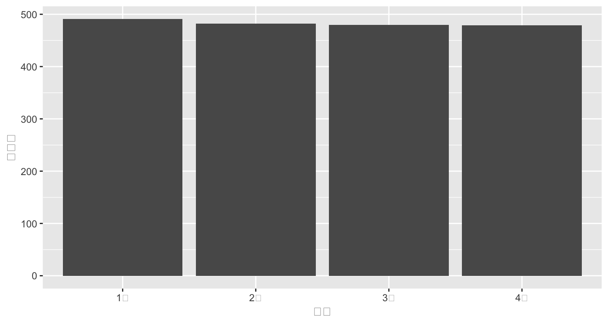
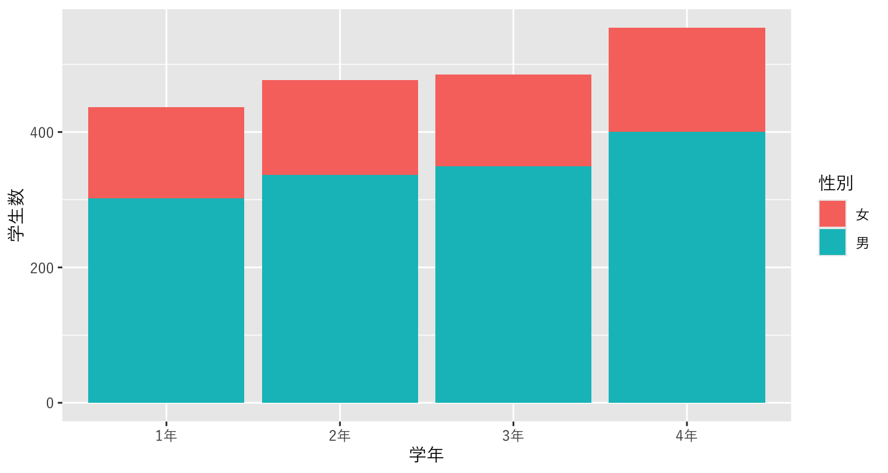
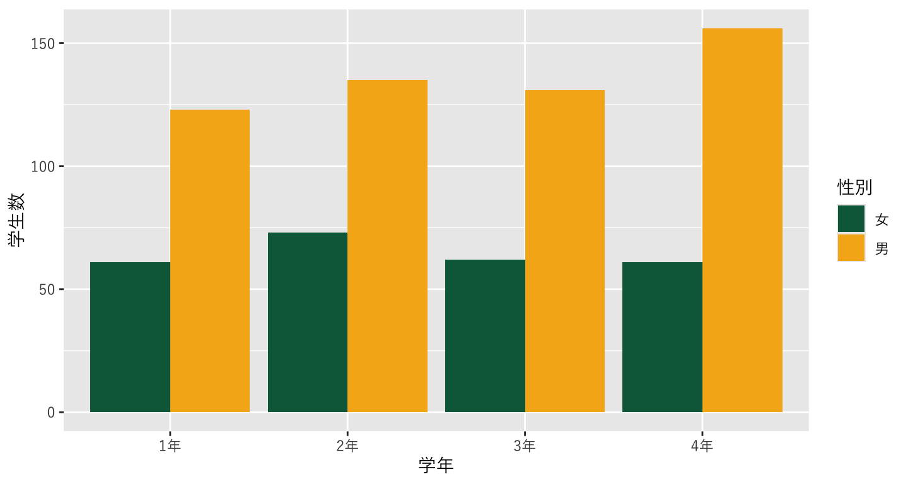
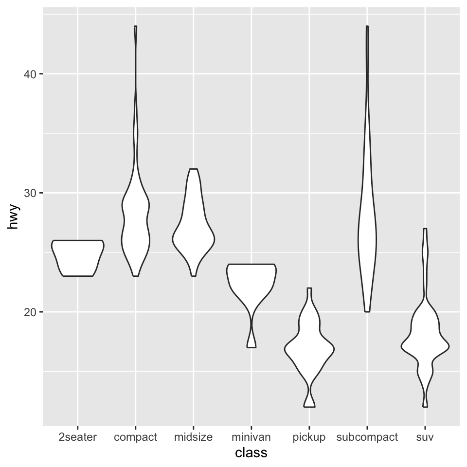
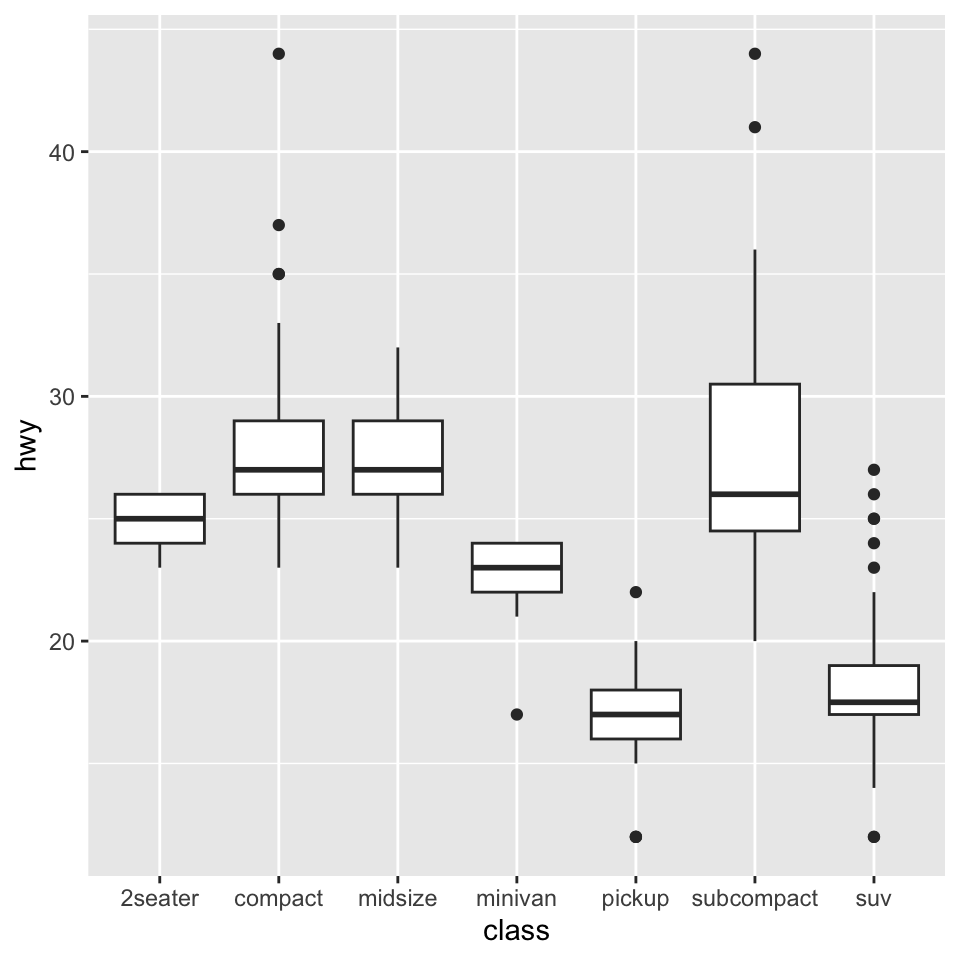

Chapter 8 ビジュアライゼーションの基本
8.1 Rにおける描画
データを可視化するビジュアリゼーションは、プレゼンテーションだけではなく分析者自身がデータを理解するためにも有効で重要なテクニック。
Rにはデフォルトの描画関数も用意されているが、tidyverseシリーズのggplot2というパッケージの関数が強力であり昨今はスタンダードになっていることから、こちらを紹介する。
ggplot2とは、グラフィックの文法 (grammar of graphics)という概念に基づいて作図するパッケージ
8.2 準備
あらたにRスクリプトを作成し、data_viz.Rという名前をつけて保存する。
そして、以下のライブラリを読み込んでおく。ライブラリがなくてエラーが出る場合はインストールしてから再度読み込む。
8.4 復習：データ読み込み
まずデータをダウンロードする。
# dataフォルダを作成していない場合はdataフォルダ（ディレクトリ）の作成
fs::dir_create("data")
# データのダウンロードとdataフォルダへの保存
download.file("https://github.com/keita43a/regression_tutorial/blob/main/docs/data/musashi_keizai_students_2023.xlsx?raw=TRUE",
destfile="data/musashi_keizai_students_2023.xlsx")ダウンロードしたデータを読み込む。
8.5 描画の前に
- データに少し工夫を加える
- データは文字列（カテゴリ）の順番を勝手に決めてしまう。
- 文字列をファクター型に変換する。
- 描画するときにカテゴリの順番を揃えたいので、順番の情報を与える。

8.7 グラフのレイヤーを追加する
- グラフの種類ごとにデータを表現する幾何学的オブジェクト
geom_が用意されている geom_barは棒グラフで表現する。- 引数として、用いるデータ
data, x軸, y軸, 色などにデータを割り当てるmapping,そして、変数をどう扱うかというstatがある。mappingにはaesという関数を使ってデータを当てはめる。- x軸は学年、y軸は学生数とする。
statにはデータそのものの数値を使うため、"identity"を指定する。
plot_634 <- ggplot() +
geom_bar(data=data_634_long, mapping=aes(x=学年, y=学生数),stat="identity") # <- 追加！
print(plot_634)
8.8 文字化けに対処する
- Macを使っていると、ggplotで日本語を使うと文字化けすることが知られている
- 豆腐化現象と呼ばれている
- 文字化けに対処するため、日本語のフォントを指定する。
- Windowsは多分不要。
- 新しく
theme_greyというレイヤーを作り、その中のbase_familyという引数でフォント名"HiraKakuPro-W3"を指定する。
plot_634 <- ggplot() +
geom_bar(data=data_634_long, mapping=aes(x=学年, y=学生数),stat="identity") +
theme_grey(base_family="HiraKakuPro-W3") # <- 追加！
print(plot_634)
8.9 aesに色を追加する
- 男女別に表示したいので、男女を色で分けたい
- マッピングでaesの中に色の変数として性別を指定する。
- 色のマッピングには二種類あり、点・線・枠の色を指定する
colorと、面の色を指定するfillがある。 - この場合は塗りつぶしたいので、
fillを指定する。 - 色は指定しなければ自動的に決められる。
8.10 男女の置き方を変えたい
- 男女を縦に積むのではなく、横に置くことで対比がしやすくなりそう。
- geom_bar()の引数の
positionをdodgeに指定する。- デフォルトは
stackになっている（文字通り「積む」）
- デフォルトは
plot_634 <- ggplot() +
geom_bar(data=data_634_long, mapping=aes(x=学年, y=学生数, fill=性別), # <- 追加！
stat="identity", position="dodge")+
theme_grey(base_family="HiraKakuPro-W3")
print(plot_634)
8.11 色を変えたい
- 色は指定しなければ自動的に決まる
- わかりやすい、おしゃれな色を使いたい場合はマニュアルで変えられる
scale_fill_manual()の中でvalueという色で変えることが可能。- 複数指定する場合は
c()の中に並べてベクトルとして扱う - 色の順番に注意
- 簡単な色の名前(例：
"blue","red")でも指定できるし、RGB値でも決められる- RGB値はネットで検索してみよう
- 複数指定する場合は
- ここでは、武蔵大学のロゴの緑と黄色を使う。
8.12 学科別に分けたい
- 現状では、学科の人数がすべて積算されてしまっているが、データとしては分かれている
- せっかくなので別で表示したいが、もうx軸もy軸も色も使ってしまっている。
- では、グラフ自体を分けてしまおう
facet_wrap()というレイヤーを使う~の後に分割に使うカテゴリを指定することで、分割した図を作ってくれる
plot_634 <- ggplot() +
geom_bar(data=data_634_long, mapping=aes(x=学年, y=学生数, fill=性別), stat="identity", position="dodge")+
scale_fill_manual(values =c("#0A6648","#F6B21B")) +
theme_grey(base_family="HiraKakuPro-W3") +
facet_wrap(~ 学科) # <- 追加！
print(plot_634)
8.13 ラベルを変更する・タイトルを追加する
- 通常はラベルを明示する
- lab()レイヤーの中で、X軸なら
x=, Y軸ならy=で変更する- 色の凡例のタイトルも
fill= - 今回は学年は明らか、学生数もタイトルで明示するので空欄とする
- 空欄としたい場合は
""
- 色の凡例のタイトルも
- タイトルを追加する場合は、
title=- サブタイトルも
subtitle=で追加できる
- サブタイトルも
- 右下のノートも
caption=で追加できる
plot_634 <- ggplot() +
geom_bar(data=data_634_long, mapping=aes(x=学年, y=学生数, fill=性別), stat="identity", position="dodge")+
scale_fill_manual(values =c("#0A6648","#F6B21B")) +
labs(fill="",x="",y="", # <- 追加!
title="武蔵大学経済学部の学科別・男女別学生数", # <- 追加!
subtitle="2023年5月1日時点", # <- 追加!
caption = "データ元：武蔵大学公式ウェブサイト") + # <- 追加!
theme_grey(base_family="HiraKakuPro-W3") +
facet_wrap(~ 学科) # <- 追加！
plot_634
8.14 テーマを変更する1
- テーマ (
theme)はggplotの細かい見た目を設定する- 背景、軸の有無、グリッドの数や濃さ、軸ラベルの字の大きさなどなど
- ggplotは背景がグレーのテーマがデフォルト
themeレイヤーで細かい設定を行うtheme_***でデフォルトテーマを使うこともできる- ここでどんなテーマがあるか見られる
8.14.1 デフォルトテーマを使った変更
- ここでは見た目をスッキリさせるデフォルトテーマ
theme_minimalを使ってみる
plot_634 <- ggplot() +
geom_bar(data=data_634_long, mapping=aes(x=学年, y=学生数, fill=性別), stat="identity", position="dodge")+
scale_fill_manual(values =c("#0A6648","#F6B21B")) +
labs(fill="",x="",y="",
title="武蔵大学経済学部の学科別・男女別学生数",
subtitle="2023年5月1日時点",
caption = "データ元：武蔵大学公式ウェブサイト") +
theme_minimal(base_family="HiraKakuPro-W3") + # <- 変更!
facet_wrap(~ 学科) ## <- 追加！
8.14.2 細かいテーマ設定
- 細かいテーマ設定を
themeレイヤーの中で行うpanel.grid.major.xはメインのグリッドの設定- element_blank()は、「空」にするという設定
legend.positionで、凡例を右ではなく下"bottom"にtextで図の中の文字を設定element_text()で設定するsize=15としてフォントサイズを15にする。
plot_634 <- ggplot() +
geom_bar(data=data_634_long, mapping=aes(x=学年, y=学生数, fill=性別), stat="identity", position="dodge")+
scale_fill_manual(values =c("#0A6648","#F6B21B")) +
labs(fill="",x="",y="",
title="武蔵大学経済学部の学科別・男女別学生数",
subtitle="2023年5月1日時点",
caption = "データ元：武蔵大学公式ウェブサイト") +
theme_minimal(base_family="HiraKakuPro-W3") +
theme(panel.grid.major.x = element_blank(), # <- 追加!
legend.position = "bottom", # <- 追加!
text = element_text(size=15)) + # <- 追加!
facet_wrap(~ 学科) 8.16 ggplot2による図の保存
- ggplotで作図した結果をオブジェクトに保存
- ここの例では
plot_634に保存
- ここの例では
figという名前のフォルダを作っておく。ggsaveという関数で、ファイルパスを指定して保存fileという引数に、"fig/musashi_students_2023.png"と指定figディレクトリの下にmusashi_students_2023という名前でpng形式ファイルとして保存するという意味
plotに保存したいggplotオブジェクト（描画したもの）を指定deviceに保存したい画像形式を指定。ここではpngを指定している。他にはtiff,pdf,jpgなど。
8.17 他の描画レイヤー
| 関数 | 描画 |
|---|---|
geom_point |
散布図 |
geom_line |
折れ線グラフ |
geom_boxplot |
箱ひげ図 |
geom_violin |
バイオリンプロット |
geom_map |
地図を描く |
- 他にも多くの描画レイヤーが存在する
- 参考
8.17.1 練習問題：散布図
ここではdiamondsというggplotに付属しているデータセットを使う。
このデータには、ダイヤモンドの一つ一つのクオリティとその価格が記録されている。クオリティはいやゆるダイヤモンドの4Cと言われるカラット(Carat), カット(Cut), 色(Color), 透明性(Clarity)で表されている。
ここでは、大きさであるカラットと価格の関係性、さらに色の影響を見てみる。
## [1] "carat" "cut" "color" "clarity" "depth" "table" "price" "x" "y" "z"## # A tibble: 6 × 10
## carat cut color clarity depth table price x y z
## <dbl> <ord> <ord> <ord> <dbl> <dbl> <int> <dbl> <dbl> <dbl>
## 1 0.23 Ideal E SI2 61.5 55 326 3.95 3.98 2.43
## 2 0.21 Premium E SI1 59.8 61 326 3.89 3.84 2.31
## 3 0.23 Good E VS1 56.9 65 327 4.05 4.07 2.31
## 4 0.29 Premium I VS2 62.4 58 334 4.2 4.23 2.63
## 5 0.31 Good J SI2 63.3 58 335 4.34 4.35 2.75
## 6 0.24 Very Good J VVS2 62.8 57 336 3.94 3.96 2.48課題：以下の画像を作成してみよう。
8.18 練習問題: 折れ線グラフ
ここではeconomicsというggplotに付属しているデータセットを使う。
このデータには、アメリカの主要な経済指標が時系列データとして記録されている。dateは年月、popは人口(1000人)、psavertは個人貯蓄率、unempmedは失業期間の中央値（週）、unemployは失業数（1000人）である。
## [1] "date" "pce" "pop" "psavert" "uempmed" "unemploy"## # A tibble: 6 × 6
## date pce pop psavert uempmed unemploy
## <date> <dbl> <dbl> <dbl> <dbl> <dbl>
## 1 1967-07-01 507. 198712 12.6 4.5 2944
## 2 1967-08-01 510. 198911 12.6 4.7 2945
## 3 1967-09-01 516. 199113 11.9 4.6 2958
## 4 1967-10-01 512. 199311 12.9 4.9 3143
## 5 1967-11-01 517. 199498 12.8 4.7 3066
## 6 1967-12-01 525. 199657 11.8 4.8 3018課題：アメリカの失業数の変遷の折れ線グラフを作成しよう。
8.19 箱ひげ図
geom_boxplotで箱ひげ図を描く- 変数の分布を確認するのに有効
- XとYの変数を指定する
- ここでは
mpgというggplotに付属しているデータセットを使う - 車の種類をx軸, 各自動車の燃費をy軸
]

8.20 ヴァイオリンプロット
geom_violinでヴァイオリンプロットを描く- 変数の分布を確認するのに有効
- XとYの変数を指定する
- ここでは
mpgというggplotに付属しているデータセットを使う - 車の種類をx軸, 各自動車の燃費をy軸

8.21 適した描画？
分析の目的やデータのタイプによって、用いたいグラフは異なる。どのような目的でデータ描画を行うのか考えてから描画に取りかかろう。

Figure 8.1: データタイプ別のグラフ
- 棒グラフ：データの大きさを比較する
- 折れ線グラフ：時系列での変化をみる
- 円グラフ：全体に占める割合をみる
- 積み上げ棒グラフ：累積データから内訳を比較する
- 散布図：2つのデータの相関関係をみる
例：グラフの種類と使い分け、間違った使い方(Tableau)
8.22 ゼミ課題：データの描画
データからグラフを描画し、それを英語で説明するプレゼンテーションを行う。
- 教育用標準データセットからデータを選ぶ。
- 選んだデータの中で、変数を選択する。
- 選択した変数について適切なグラフを描画する。
- 必要に応じてデータを加工する。
他人と同じ変数は使えないため、どのデータのどの変数を描画するかは早いもの勝ちである。
自分がどのデータセットのどの変数を描画するかをGoogle Classroomのストリームに投稿する。（締切：6/4 23:59）
描画した画像ファイルとRコードをGoogle Classroomの課題3-2に提出する。(締切：6/11 23:49）
- Rコードはkadai_presen_XXX.Rという名前をつけて保存する。XXXには自分の名前を英語で入れる。
描画した画像ファイルについて、2~3分のプレゼンテーションを行う（実施日：6/19 ゼミ）
- 英語で作成したグラフの説明を行う2~3分のプレゼンを準備する。
- 提出された画像からスライドを作るのでスライドは用意しなくて良い。
- 画像だけで自分で英語で説明する。どういうデータなのか、何を説明しているのか、グラフから何が言えそうか。
- 原稿やスマホを使ってはいけない。
- 順番はランダム。
8.22.1 例：SSDSE-B県別推移のデータ
ここでは一例として、県別推移データの合計特殊出生率を示すデータ描画を作成する。 実際のデータ描画では、どのようなグラフ（棒グラフ・折れ線グラフなど）でも構わない。
- あらたにRスクリプトを作成し、
kadai_presen_XXX.Rという名前をつけて保存する。XXXには自分の名前を英語で入れる。
そして、以下のライブラリを読み込んでおく。
データをダウンロードして、dataフォルダに入れる。
データを読み込む。日本語のデータでエンコーディングがShift-JISなのでencodingを変更する必要がある（セクション6.2.2参照）。 ここではdataフォルダの下にSSDSEというフォルダを作って、そこにデータファイルを保存しているので、
data/SSDSE/SSDSE-B-2024.csvをパスとして指定しているが、もしdataフォルダに直接保存している場合はdata/SSDSE-B-2024.csvとなる。 また、列名が2行にわたってしまっているので、最初の一行をskipするため、skip=1という引数を指定している。
data_ssdse <- read_csv("data/SSDSE/SSDSE-B-2024.csv",
locale=locale(encoding="CP932"),
skip=1)
# 変数名を確認
names(data_ssdse)## [1] "年度" "地域コード" "都道府県"
## [4] "総人口" "総人口（男）" "総人口（女）"
## [7] "日本人人口" "日本人人口（男）" "日本人人口（女）"
## [10] "15歳未満人口" "15歳未満人口（男）" "15歳未満人口（女）"
## [13] "15〜64歳人口" "15〜64歳人口（男）" "15〜64歳人口（女）"
## [16] "65歳以上人口" "65歳以上人口（男）" "65歳以上人口（女）"
## [19] "出生数" "出生数（男）" "出生数（女）"
## [22] "合計特殊出生率" "死亡数" "死亡数（男）"
## [25] "死亡数（女）" "転入者数（日本人移動者）" "転入者数（日本人移動者）（男）"
## [28] "転入者数（日本人移動者）（女）" "転出者数（日本人移動者）" "転出者数（日本人移動者）（男）"
## [31] "転出者数（日本人移動者）（女）" "婚姻件数" "離婚件数"
## [34] "年平均気温" "最高気温（日最高気温の月平均の最高値）" "最低気温（日最低気温の月平均の最低値）"
## [37] "降水日数（年間）" "降水量（年間）" "着工建築物数"
## [40] "着工建築物床面積" "旅館営業施設数（ホテルを含む）" "旅館営業施設客室数（ホテルを含む）"
## [43] "標準価格（平均価格）（住宅地）" "標準価格（平均価格）（商業地）" "幼稚園数"
## [46] "幼稚園教員数" "幼稚園在園者数" "小学校数"
## [49] "小学校教員数" "小学校児童数" "中学校数"
## [52] "中学校教員数" "中学校生徒数" "中学校卒業者数"
## [55] "中学校卒業者のうち進学者数" "高等学校数" "高等学校教員数"
## [58] "高等学校生徒数" "高等学校卒業者数" "高等学校卒業者のうち進学者数"
## [61] "短期大学数" "大学数" "短期大学教員数"
## [64] "大学教員数" "短期大学学生数" "大学学生数"
## [67] "短期大学卒業者数" "短期大学卒業者のうち進学者数" "大学卒業者数"
## [70] "大学卒業者のうち進学者数" "専修学校数" "各種学校数"
## [73] "専修学校生徒数" "各種学校生徒数" "新規求職申込件数（一般）"
## [76] "月間有効求職者数（一般）" "月間有効求人数（一般）" "充足数（一般）"
## [79] "就職件数（一般）" "一般旅券発行件数" "延べ宿泊者数"
## [82] "外国人延べ宿泊者数" "着工新設住宅戸数" "着工新設持家数"
## [85] "着工新設貸家数" "着工新設分譲住宅数" "着工新設住宅床面積"
## [88] "着工新設持家床面積" "着工新設分譲住宅床面積" "着工新設貸家床面積"
## [91] "ごみ総排出量（総量）" "1人1日当たりの排出量" "ごみのリサイクル率"
## [94] "一般病院数" "一般診療所数" "歯科診療所数"
## [97] "保育所等数" "保育所等定員数" "保育所等利用待機児童数"
## [100] "保育所等在所児数" "保育所等保育士数" "消費支出（二人以上の世帯）"
## [103] "食料費（二人以上の世帯）" "住居費（二人以上の世帯）" "光熱・水道費（二人以上の世帯）"
## [106] "家具・家事用品費（二人以上の世帯）" "被服及び履物費（二人以上の世帯）" "保健医療費（二人以上の世帯）"
## [109] "交通・通信費（二人以上の世帯）" "教育費（二人以上の世帯）" "教養娯楽費（二人以上の世帯）"
## [112] "その他の消費支出（二人以上の世帯）"- データの加工: 都道府県別の合計特殊出生率の推移を比較する。しかし、すべての都道府県では多すぎるため、関東の１都６県に限定する。
data_kanto <- data_ssdse |>
filter(都道府県 %in% c("東京都","神奈川県","千葉県","埼玉県","茨城県","栃木県","群馬県"))
# %in% は 「都道府県というカテゴリ変数が、c()の中のいずれかに該当すれば真、という命題を表す。- グラフ描画する
plot_f_rate <- ggplot(data=data_kanto,aes(x=年度, y=合計特殊出生率, col=都道府県)) +
geom_line() +
geom_point() +
theme_bw(base_family = "HiraKakuPro-W3")
plot_f_rate
５．英語で発表するため、英語に変換する
plot_f_rate <- ggplot(data=data_kanto,aes(x=年度, y=合計特殊出生率, col=都道府県)) +
geom_line() +
geom_point() +
theme_bw(base_family = "HiraKakuPro-W3") +
# ラベルを変換
labs(x="Fiscal Year", y="Total Fertility Rate", col="Pref.") +
# カテゴリの名前（都道府県を変換）
scale_color_discrete(breaks = c("千葉県","埼玉県","東京都","栃木県","神奈川県","群馬県","茨城県"),
labels = c("Chiba","Saitama","Tokyo","Tochigi","Kanagawa","Gumma","Ibaragi")) +
theme(text = element_text(size=15)) # スライドで見やすくするために字を大きくする
plot_f_rate
- 保存する。ここではpng形式で保存している。保存するファイルのパスの最後（ファイル名）に.pngを指定し、
deviceという引数にpngを指定している。 保存したファイルはパワーポイントなどに貼ることができる。